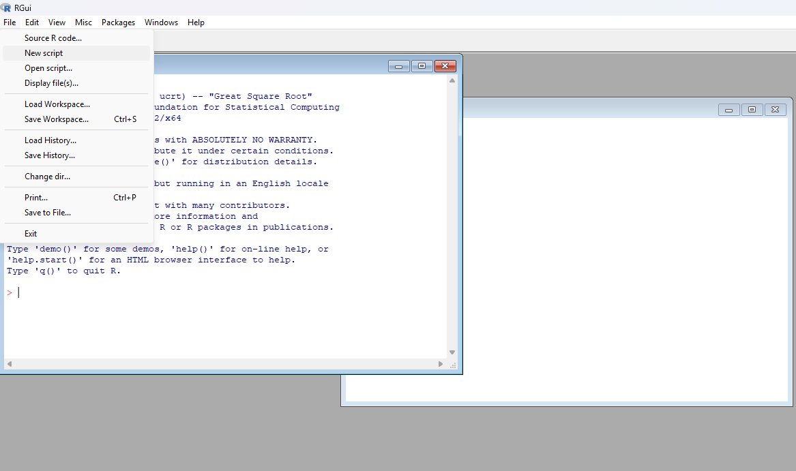
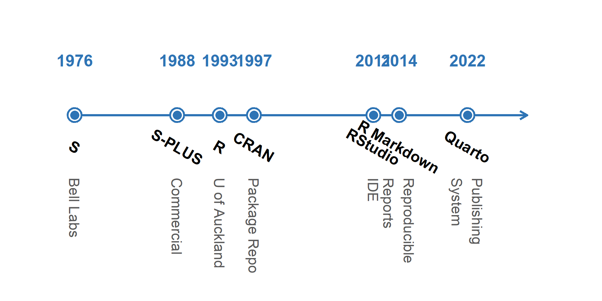
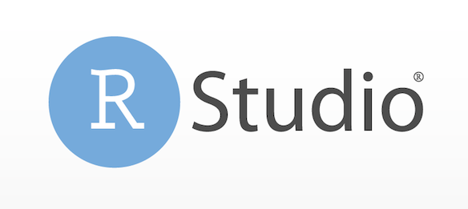
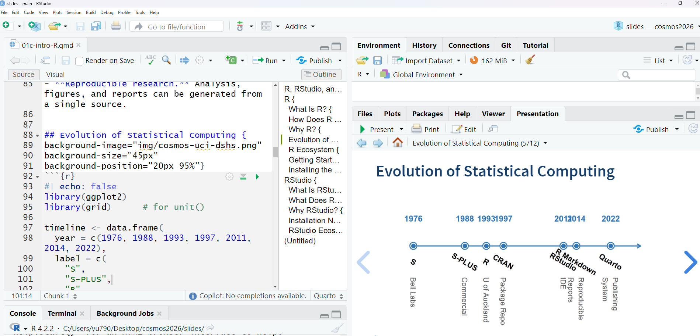
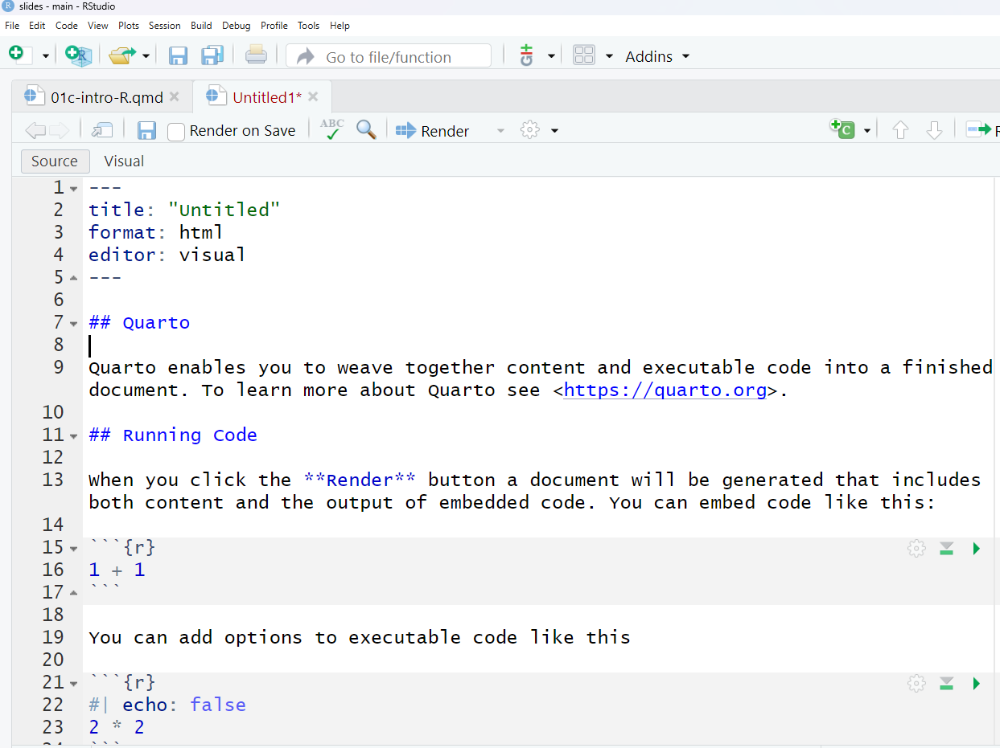

R, RStudio, and Quarto
Zhaoxia Yu
R
What Is R?
- A programming language and software environment for statistical computing and data analysis.
- Created by statisticians Ross Ihaka and Robert Gentleman at the University of Auckland in the early 1990s.
- Runs on Windows, macOS, and Linux.
- Widely used in academia, industry, government, and research around the world.
- Supports data analysis, visualization, machine learning, and reproducible research through thousands of contributed packages.
How Does R Look Like?

Why R?
- Designed for statistics. Created by statisticians for statistical computing and education.
- Excellent graphics. Create publication-quality figures with packages such as ggplot2.
- Large scientific community.
- How many packages?
- 20,000+ packages on CRAN
- Open source. Free to use, free to share, and free to modify.
- Reproducible research. Analysis, figures, and reports can be generated from a single source.
Evolution of Statistical Computing

R Ecosystem
R is much more than a programming language.
- R: The programming language
- CRAN: Repository of 20,000+ contributed packages
- RStudio: An integrated development environment (IDE) for R
- RMarkdown / Quarto: publishing systems for reports, slides, websites, and books
- Git & GitHub: Version control and collaboration (optional but highly recommended)
Today we’ll use: R + RStudio + Quarto
Getting Started with R
To use R effectively, we need three pieces of software:
R: the programming language. The engine.
RStudio (recommended). The dashboard.
- Where we write and run R code.
Quarto (optional but highly recommended). The publishing system.
- Where we create reproducible reports and presentations.
Today’s workflow: R → RStudio → Quarto
Installing the Software
Installation order: R → RStudio → Quarto
- R
- The programming language.
- Everything else depends on it. If R is not installed, RStudio will not work.
- RStudio
- Detects and uses your R installation
- Quarto (optional)
- Works with R and RStudio to create reports, slides, and websites
RStudio

What Is RStudio?
RStudio is an integrated development environment (IDE) for R.
Easy to use: write, run, and debug R code in one place.
Organized workspace: editor, console, environment, plots, files, and help.
Productivity tools: syntax highlighting, code completion, project management, and package management.
Works seamlessly with Quarto to create reports, presentations, and websites.
How Does RStudio Look Like?

Why RStudio?
An integrated development environment (IDE) for writing, running, and debugging R code.
User-friendly interface with separate panes for the script editor, console, environment, plots, and files.
Improves productivity by providing syntax highlighting, code completion, project management, and package management.
Works seamlessly with R and Quarto to create reproducible reports, presentations, and websites.
Free, open source, and running on Windows, macOS, and Linux.
RStudio Ecosystem
RStudio is more than an editor. It integrates with many tools
- Git & GitHub
- Quarto
- Python
- SQL
- Jupyter Notebooks
Today we’ll focus on Quarto, which allows us to combine text, code, figures, and results into a single document.
From Code to Communication
Writing code is only part of data science. We also need to communicate our work. Quarto allows us to combine
- text
- R code
- tables
- figures
into one reproducible document.
Next, let’s learn Quarto.
Quarto

What Is Quarto?
Quarto is an open-source scientific and technical publishing system.
It combines text, code, figures, and results in a single document.
It works with multiple programming languages, including R, Python, and Julia.
Quarto is a standalone application that can be used with or without R.
We will use Quarto together with R and RStudio.
Why Quarto?
Reproducible research: analysis and results are generated from the same source file.
Easy to update: changing the data automatically updates tables and figures.
Professional output: produce reports, presentations, websites, and books.
Works seamlessly with RStudio.
What Can Quarto Create?
Quarto can generate
- PDF reports
- HTML reports
- Reveal.js presentations
- Websites
- Books
These lecture slides were created with Quarto!
Anatomy of a Quarto Document

RStudio + Quarto
RStudio makes Quarto easy to use.
- Edit a
.qmdfile. - Write text using Markdown.
- Add R code.
- Click Render to produce the final document.
Summary
Today we introduced three essential tools:
- R computes.
- RStudio helps us write and organize code.
- Quarto communicates results.
Together they form a modern workflow for data science.